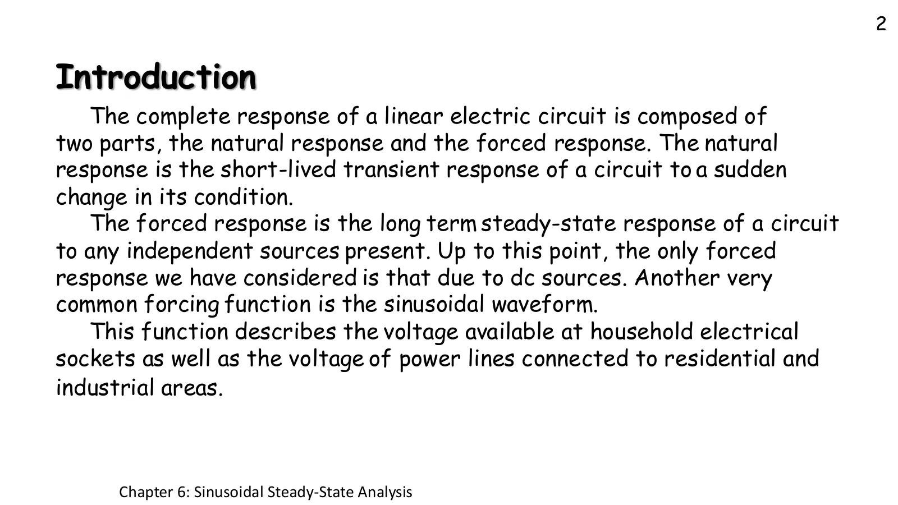
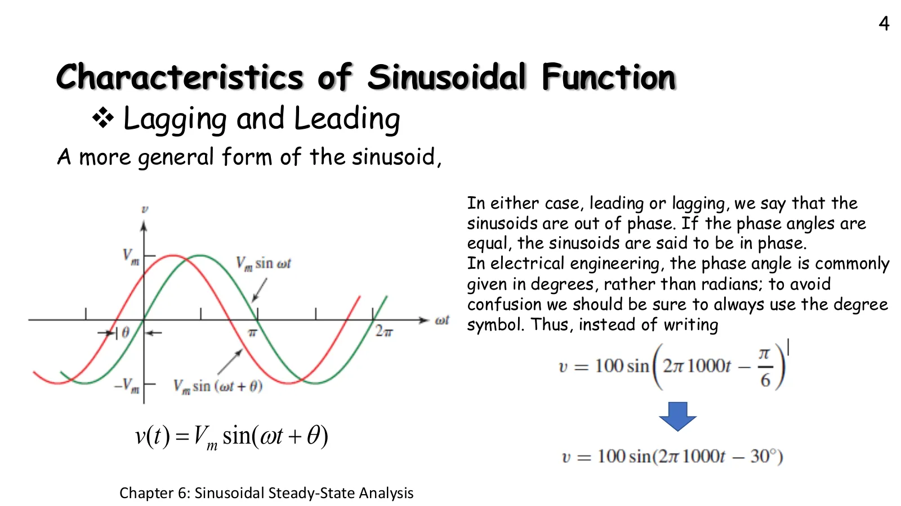
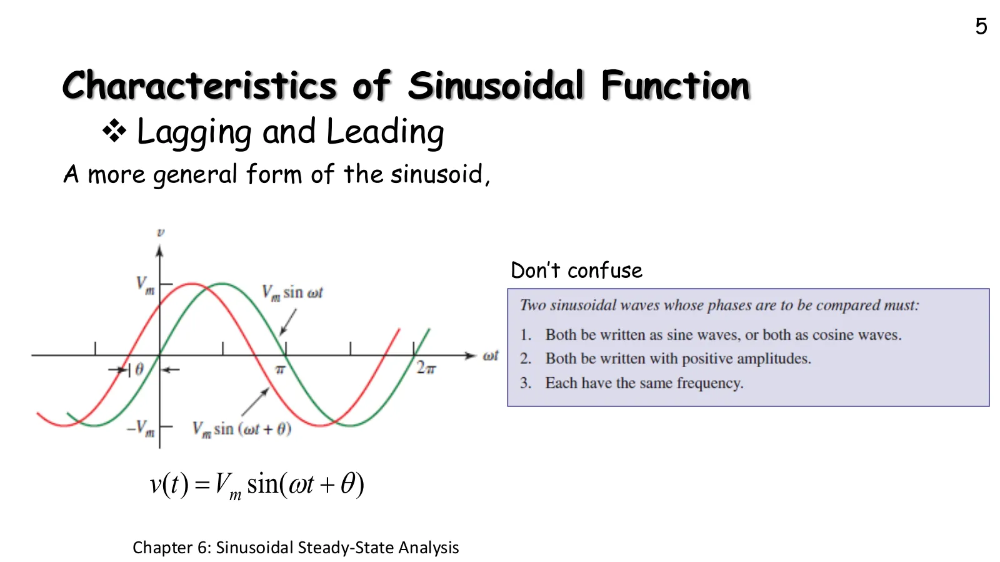
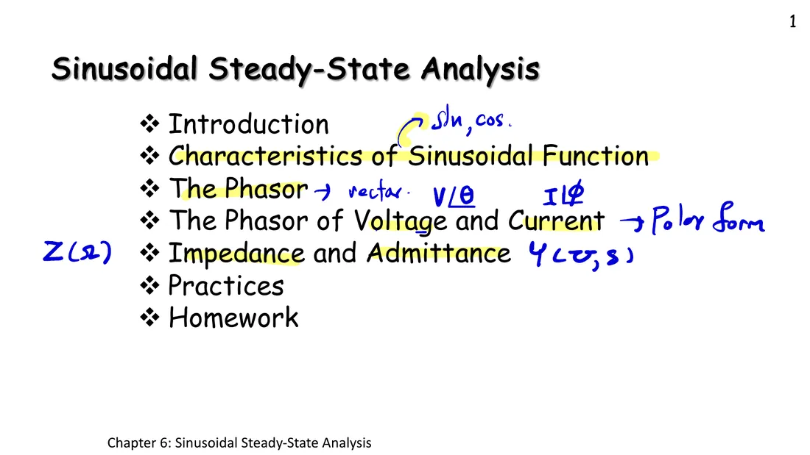
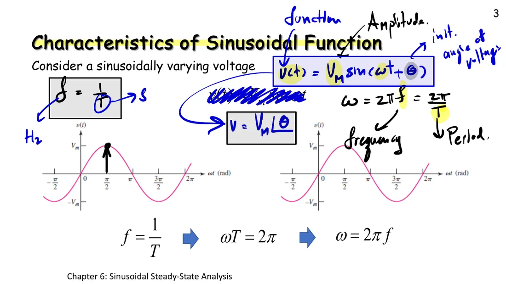
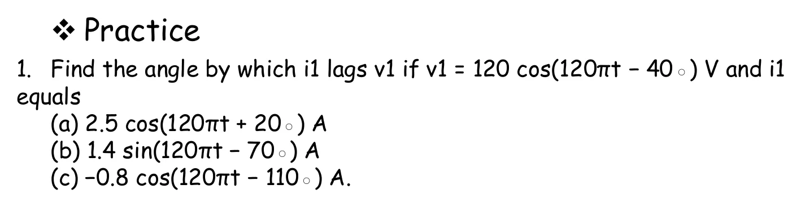
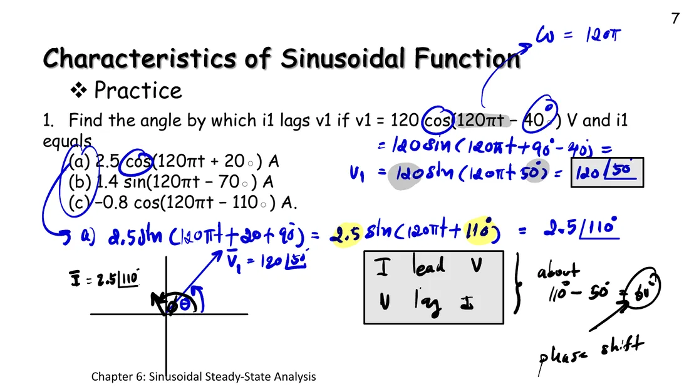

In chapters 2–5 every source was constant (DC). From this chapter on, sources vary in time as a sine wave, like the voltage at a wall socket or on a power line. Slide p. 3: a sinusoid is fixed by three numbers, the amplitude \(V_m\) (peak value), the angular frequency \(\omega\) and the phase angle \(\theta\), so before analysing circuits we must read a sinusoid fluently: how high it peaks, how fast it turns and at what angle it starts. This page has a spinning-arrow simulation (section A), then one example and one practice with three items on leading and lagging. Each problem's simulation shows the given waves, and the phasor arrows appear as each signal is rewritten into the sine form, one step at a time.
$$ \begin{gathered} v(t) = V_m\sin(\omega t + \theta) \\ f = \frac{1}{T} \qquad \omega T = 2\pi \qquad \omega = 2\pi f \end{gathered} $$
A sinusoid is fixed by three numbers: the amplitude \(V_m\) (peak value), the angular frequency \(\omega\) (radians per second, rad/s) and the phase angle \(\theta\) (degrees).
\(\omega = 2\pi f\) and \(f = 1/T\): 50 Hz mains has a period \(T = 20\) ms and \(\omega = 100\pi \approx 314.16\) rad/s.
A sinusoid is the height of the tip of an arrow of length \(V_m\) turning anticlockwise at angular speed \(\omega\). The arrow sits at angle \(\theta\) at \(t = 0\) and makes one full turn (360°) per period.
\(\theta > 0\) means leading: it peaks earlier, so the graph shifts left · \(\theta < 0\) means lagging · equal angles mean in phase.
Two phases can be compared only if (1) both are sines or both cosines, (2) both amplitudes are positive, (3) both frequencies are equal. Use \(\cos x = \sin(x + 90^\circ)\) and \(-\sin x = \sin(x \pm 180^\circ)\) to get there first.
Always write the phase in degrees with the ° sign, e.g. \(100\sin(2\pi 1000t - 30^\circ)\) rather than \(100\sin(2\pi 1000t - \pi/6)\), so it is not confused with \(\omega t\), which is in radians.
บทนำ การนำหน้าและตามหลัง (สไลด์หน้า 2, 4–5)
Introduction, leading and lagging (slides pp. 2, 4–5)
A circuit's response has two parts: the natural response, a short-lived transient after the circuit changes, and the forced response, which lasts as long as the source keeps running. This chapter is only about the second, the sinusoidal steady state (p. 2). Page 4 gives the general form \(V_m\sin(\omega t + \theta)\): with \(\theta > 0\) the wave leads \(V_m\sin\omega t\), equal angles mean in phase, and angles are written in degrees. Page 5 warns that two signals can only have their phases compared if both are written as sines (or both as cosines), both amplitudes are positive and both frequencies are equal.

สไลด์หน้า 2 · แตะรูปเพื่อขยายSlide p. 2 · tap to enlarge

สไลด์หน้า 4 · แตะรูปเพื่อขยายSlide p. 4 · tap to enlarge

สไลด์หน้า 5 · แตะรูปเพื่อขยายSlide p. 5 · tap to enlarge
ดูสไลด์ที่ผู้สอนเขียนในห้อง (ก.ย. 2566)See the slides as written in class (September 2023)

หน้าสารบัญ: เฟเซอร์คือเวกเตอร์ \(V\angle\theta\), \(I\angle\phi\) ในรูปเชิงขั้ว และหน่วยของ \(Z\) (Ω) กับ \(Y\) (S)Contents: the phasor is a vector \(V\angle\theta\), \(I\angle\phi\) in polar form, with the units of \(Z\) (Ω) and \(Y\) (S)

หน้า 3: ชื่อของแต่ละส่วนใน \(V_m\sin(\omega t + \theta)\) และเฟเซอร์ \(V_m\angle\theta\)p. 3: the name of each part of \(V_m\sin(\omega t + \theta)\), and the phasor \(V_m\angle\theta\)
Top is a circuit with a source \(v(t)\) across a resistor: the dots swing back and forth with the value of \(v(t)\) at that instant. Bottom left is an arrow of length \(V_m\) turning anticlockwise; the dashed line from its tip runs right at the height of the tip, which is exactly the value of the graph at the cursor. The graph has \(\omega t\) in degrees with the time in milliseconds underneath. Green is \(V_m\sin\omega t\) (zero phase), for comparison.
ทำไมความสูงของลูกศรที่หมุนจึงเป็นคลื่นไซน์Why the height of a spinning arrow is a sine wave
An arrow of length \(V_m\) at angle \(\alpha\) has its tip at \((V_m\cos\alpha,\ V_m\sin\alpha)\). If it turns at angular speed \(\omega\) starting from angle \(\theta\), then \(\alpha = \omega t + \theta\), so the height of the tip is \(V_m\sin(\omega t + \theta)\), and one turn takes \(\omega T = 2\pi\). Page 1.4 read the shadow on the real axis (cosine), as Hayt does; from chapter 6 this course reads the height on the imaginary axis (sine), as the slides do. It is the same arrow, since \(\sin x = \cos(x - 90^\circ)\).
Practice 1: find the angle by which \(i_1\) lags \(v_1\) (slide p. 7)
Hayt Practice 10.1 · \(v_1 = 120\cos(120\pi t - 40^\circ)\) V ใช้ร่วมกันทั้งสามข้อ ตอบเป็นองศา ค่าลบแปลว่า \(i_1\) นำหน้า \(v_1\) มุมที่ต่างกัน 360° ถือว่าเป็นคำตอบเดียวกัน (เช่น −60 กับ 300)
Hayt Practice 10.1 · \(v_1 = 120\cos(120\pi t - 40^\circ)\) V is shared by all three items. Answer in degrees; a negative value means \(i_1\) leads \(v_1\). Angles 360° apart count as the same answer (e.g. −60 and 300).

โจทย์จากสไลด์หน้า 7 · แตะรูปเพื่อขยายThe problem, slide p. 7 · tap to enlargeดูข้อ (a) ที่ผู้สอนทำในห้องSee item (a) as worked in class

ข้อ (a): \(\mathbf{V}_1 = 120\angle 50^\circ\), \(\mathbf{I}_1 = 2.5\angle 110^\circ\) ดังนั้น \(i_1\) นำหน้า \(v_1\) 60° (ตอบ −60° ตามโจทย์ที่ถามมุมที่ตามหลัง)Item (a): \(\mathbf{V}_1 = 120\angle 50^\circ\), \(\mathbf{I}_1 = 2.5\angle 110^\circ\), so \(i_1\) leads \(v_1\) by 60° (the answer is −60°, since the question asks for the lag)
2a
(a) \(i_1 = 2.5\cos(120\pi t + 20^\circ)\) A
(a) \(i_1 = 2.5\cos(120\pi t + 20^\circ)\) A
2b
(b) \(i_1 = 1.4\sin(120\pi t - 70^\circ)\) A
(b) \(i_1 = 1.4\sin(120\pi t - 70^\circ)\) A
2c
(c) \(i_1 = -0.8\cos(120\pi t - 110^\circ)\) A
(c) \(i_1 = -0.8\cos(120\pi t - 110^\circ)\) A
ลองทำดู 1 — นำหน้าคือเลื่อนซ้าย
ส่วน A ตั้ง \(\theta = +90^\circ\): กราฟสีชมพูถึงยอดตั้งแต่ \(\omega t = 0\) คือ \(V_m\cos\omega t\) ซึ่งนำหน้า \(V_m\sin\omega t\) อยู่ 90°
In section A set \(\theta = +90^\circ\): the pink graph peaks right at \(\omega t = 0\). It is \(V_m\cos\omega t\), which leads \(V_m\sin\omega t\) by 90°.
Set \(\theta = -90^\circ\): the graph shifts right, i.e. it lags by 90°, and equals \(-V_m\cos\omega t\).
Pause: the pink arrow is ahead of the green one (anticlockwise) by exactly θ, whenever you stop it.
Try this 2 — degrees and time
In section A press the "slide p. 4" example: \(100\sin(2\pi 1000t - \pi/6)\) is rewritten as \(100\sin(2\pi 1000t - 30^\circ)\).
At 1000 Hz the period is 1 ms, so −30° is a delay of \(\tfrac{30}{360} \times 1\ \text{ms} = 83.3\ \mu\text{s}\) (see \(\Delta t\) in the panel).
Change the frequency: the degree axis stays the same while the time axis changes, because 360° is always one period.
Try this 3 — rewriting does not move the graph
Problem 2c: the steps that turn cos into sin and make the amplitude positive do not move the graph of \(i_1\) at all; only the way it is written changes.
In section A set \(\theta = 180^\circ\), then \(-180^\circ\): the same graph, because +180° and −180° land in the same place. Problem 2c uses this.
Question: does \(5\sin(\omega t + 200^\circ)\) lead or lag \(5\sin\omega t\), and by how much? (Bring the angle into ±180° first.)
Chapter 6 slides, pp. 2–7 · in class, September 2023 · Hayt §10.1, Practice 10.1